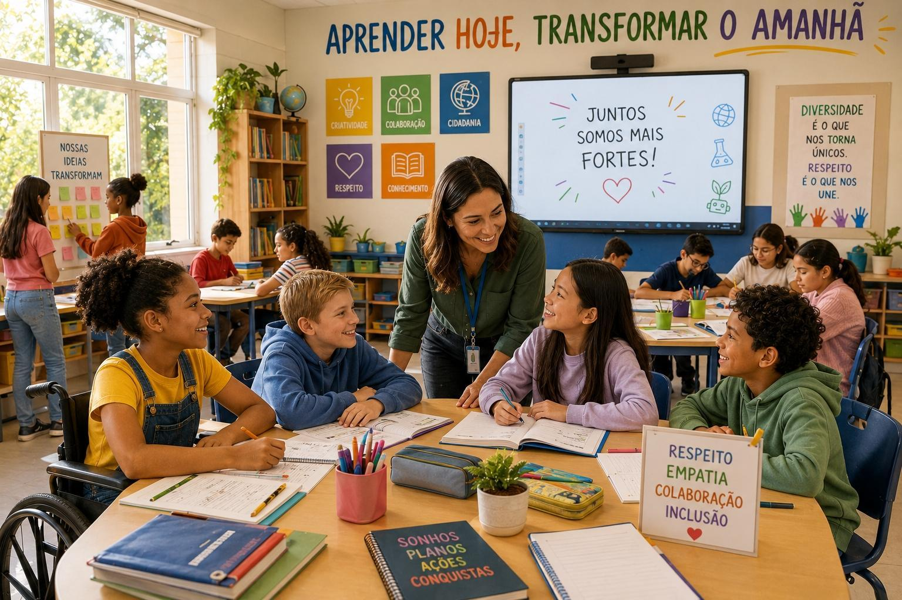
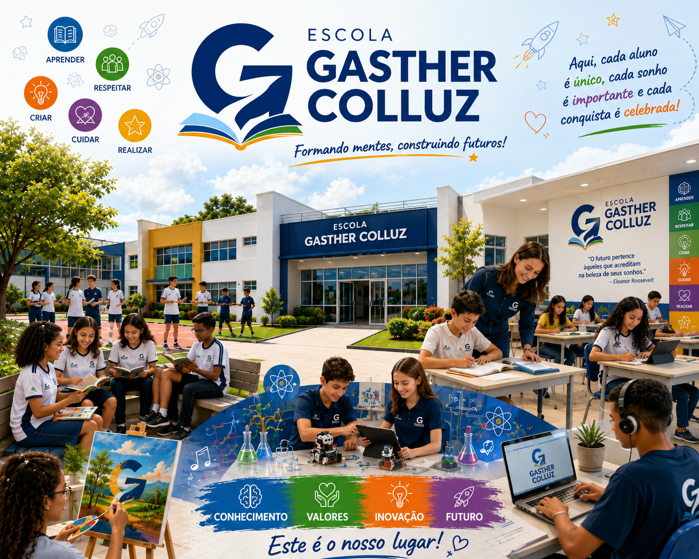
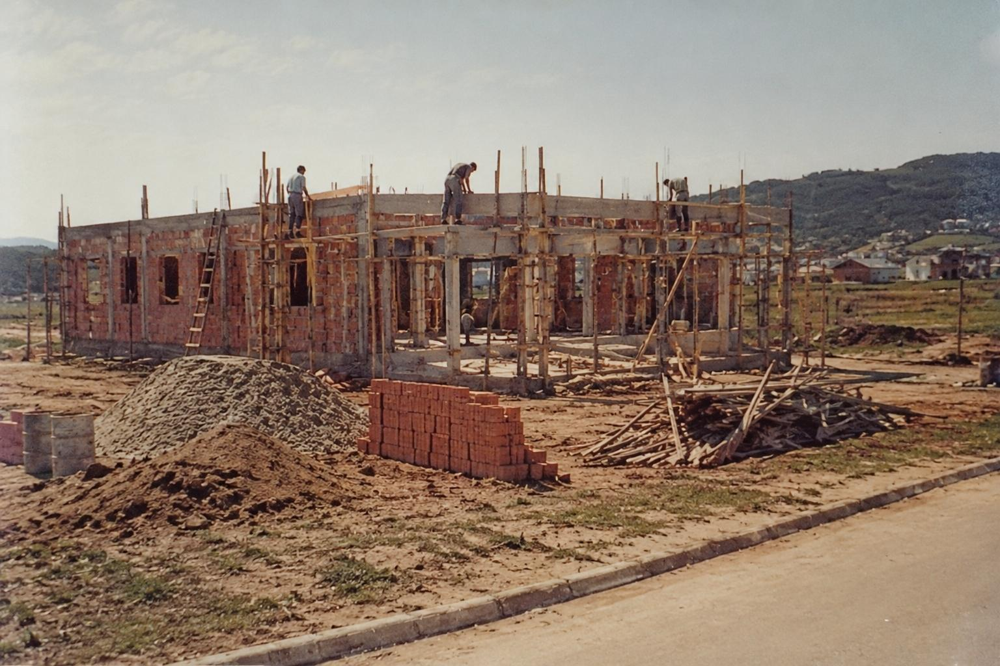
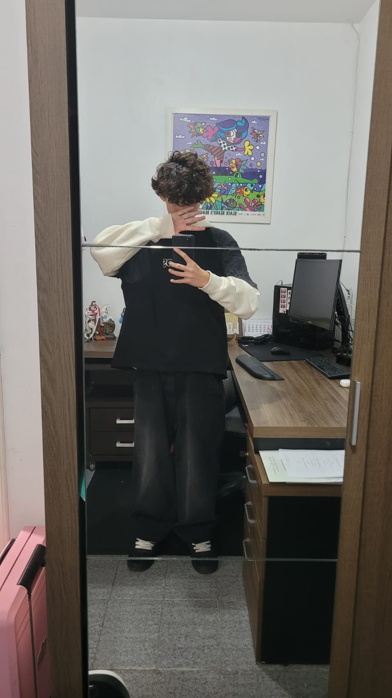
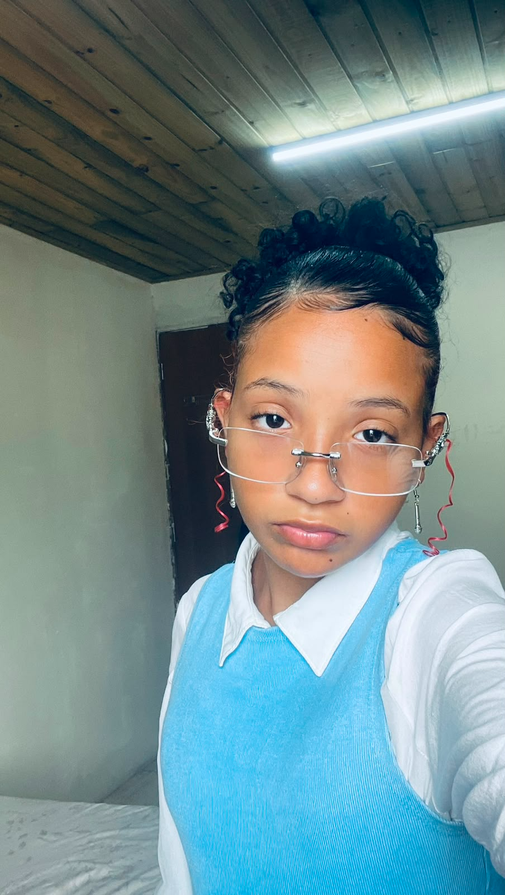

Bem vindo a escola
-O que a Escola Gasther Colluz oferece: -Ensino Técnico Integrado ao Ensino Médio; -Matérias regulares do Ensino Médio; -Programação e Análise de Sistemas; -Algoritmos e Lógica de Programação; -Banco de Dados; -Engenharia de Software; Desenvolvimento Web; -Inteligência Artificial; -Cibersegurança; -Projetos práticos voltados para tecnologia e inovação; -Área de jogos para lazer e descanso dos alunos. A Escola Gasther Colluz tem como objetivo oferecer uma formação completa, unindo educação de qualidade, tecnologia e bem-estar para preparar os estudantes para os desafios do futuro.
Matriculas Abertas!!!



Expediente
Horario de Expediente
Das 07 as 19
Secretaria
Horario de funcionamento da secretaria
Localização
RUA:Orlando João da Rosa
BAIRRO:Nova Palhoça
CEP:88131-564
@Gasther_Colluz
© 2026
🏫O Início de um Sonho (1985)

No dia 25 de outubro de 1985, nascia uma instituição com a missão de transformar vidas através do conhecimento. Fundada por três educadores apaixonados pela pedagogia, a escola começou suas atividades em um ambiente simples, mas com o objetivo gigante de oferecer um ensino humanizado, crítico e de alta qualidade.
Crescimento e Modernização
Ao longo das décadas de 1990 e 2000, a instituição acompanhou as transformações do mundo. A escola expandiu sua estrutura física, inaugurou laboratórios modernos e passou a atender desde a Educação Infantil até o Ensino Médio. O foco sempre foi alinhar a inovação tecnológica aos valores éticos e sociais.
A Instituição Hoje
Atualmente, somos referência em excelência acadêmica e formação integral. Preparamos nossos alunos não apenas para os exames e vestibulares mais concorridos, mas também para os desafios globais do século XXI, cultivando a liderança, a empatia e o pensamento do futuro.
A Origem do Nosso Nome
Muitos se perguntam o significado por trás da nossa marca. A identidade da escola é o reflexo direto da união, do esforço e do coração dos nossos três fundadores. O nome Gasther Colluz nasceu da junção harmoniosa dos nomes de Giovanna Luz, Arthur Castillo e Ester Correa. Essa combinação simboliza a soma de seus ideais e o legado vivo que eles decidiram construir juntos para a educação.
Sobre nos


O projeto da Escola Gasther Colluz foi desenvolvido por Arthur, Ester e Giovanna. Durante a criação, o grupo realizou diversas conversas, discussões e trocas de ideias para tornar o projeto o mais completo e criativo possível. O objetivo era desenvolver uma escola diferente das demais, combinando tecnologia, inovação e conforto para os alunos. Ao longo do trabalho, surgiram vários desafios e opiniões diferentes, mas isso ajudou a melhorar o projeto. Cada integrante contribuiu com ideias para a estrutura da escola, os cursos oferecidos e os recursos disponíveis, sempre buscando criar uma proposta de destaque a cima da turma. Para o desenvolvimento do projeto, foram utilizados conceitos de programação e desenvolvimento de sistemas, incluindo HTML, CSS, Python, Banco de Dados e levantamento de requisitos. Com criatividade, dedicação e trabalho em equipe, o grupo conseguiu transformar suas ideias em uma escola moderna, tecnológica e preparada para o futuro.